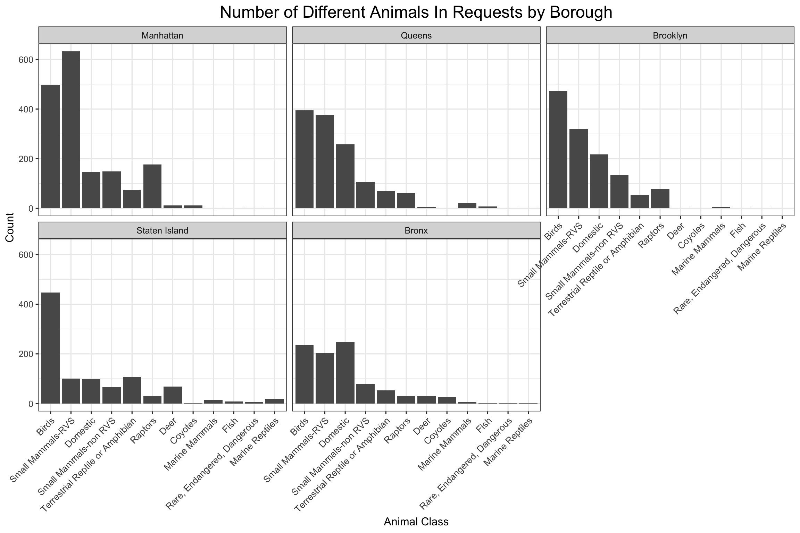
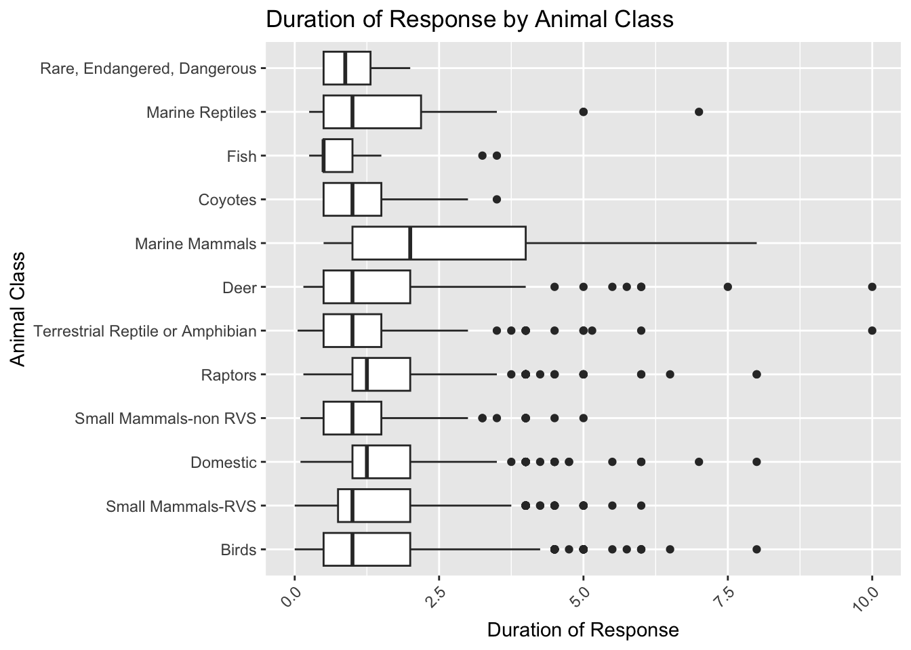

3 Results
3.1 Patterns by Borough and Location
In this section, our aim is to discover the spatial patterns of animal rescue requests. By grouping data with the same borough (and location), we explored the number of requests and response times. By studying these spatial trends, we can gain insights about where to focus on and what to improve for boroughs and parks.
3.1.1 Number of Animal Rescue Requests of Parks
The Cleveland dot plot below shows the number of animal rescue requests in parks with more than 10 requests in total in each borough. The boroughs are ordered by the number of such parks in them.
From this graph, we observed that most parks have 125 or fewer animal rescue requests, but different boroughs show different patterns. Queens and Staten Island have the most parks with more than 10 requests, but most of their parks have fewer than 125 requests, and no park’s number of requests exceeds 250. Manhattan and Brooklyn have fewer parks with more than 10 requests, but each has an outlier – Central Park for Manhattan and Prospect Park for Brooklyn. Particularly, Central Park contains almost 1000 requests. The Bronx has the fewest number of parks, but the first two or three parks have relatively large numbers of requests compared with the first several parks in Queens or Staten Island.
In general, the incidents in Queens and Staten Island are more evenly distributed. Given that they have the most parks, one thing we can focus on is the distribution of resources among these parks. For Manhattan and Brooklyn, except for the distribution of resources among all parks, we can develop strategies or departments dedicated to Central Park and Prospect Park. For the Bronx, with fewer parks and a high number of requests only in the first few parks, we can consider two distinct management strategies: one for the more heavily requested parks and another for the remaining parks with fewer incidents.
3.1.2 Average Response Time by Animal Conditions
With the knowledge about the number of requests in each borough, we now analyze the average response time of incident calls (from the time of the initial call to the time of ranger responses) with different animal conditions to see if the incidents, especially those involving injured and unhealthy animals, are handled in time.
The boroughs are ordered based on the total average response time. Staten Island has the longest response time, and it shows an unusual pattern: it has the longest response time for injured animals (about 9 hours) and the second longest response time for unhealthy animals. This could result from larger, more dispersed parks in Staten Island and the more comprehensive preparation required by rescuing injured and unhealthy animals. For Manhattan, we also saw the longest average response time for injured animals and a relatively long time for unhealthy animals, which drew our attention to the causes of these lags between the initial call and ranger response for injured and unhealthy animals.
Thus, we checked the median response time of parks in all five boroughs. Below is the Cleveland dot plot containing parks with a median response time higher than 10 hours.
3.1.3 Median Response Time of Parks
There are two places in Staten Island – Levy Park and Jennifer’s Playground – with really long median response time, and they could be one of the contributors to the abnormally long average response time for injured animal calls. Further exploration or resource allocation can be focused on these two places to figure out ways to reduce their response time. For Manhattan, the situation is different. No park has a median response time of more than 25 hours. Thus, its relatively high average response time can only be a result of the occasional long response time of parks that usually respond in a shorter time. This can imply unusual conditions like accessibility challenges, complex cases, or traffic problems. Further efforts are required to identify the specific cause and resolve the issue effectively.
3.2 Time Patterns
In this section, we will explore the time patterns of animal rescue requests. Understanding when incidents occur most often is the key to improving how we respond to and manage these situations. By recognizing patterns in the timing of rescue requests, organizations can better prepare for busy times, make sure the right people and resources are available, and even take steps to prevent problems before they happen.
3.2.1 Yearly & Seasonal Patterns
First, we take a look at how the number of rescue requests has changed from 2018 to 2024.
From the line plot above, we can see that there are annual and monthly trends in rescue requests:
Yearly Trends:
Between 2018 and 2019, there was a noticeable drop in rescue requests. This could be due to changes in how people report issues, public awareness levels, or environmental factors. However, after 2019, the number of calls slowly increased, suggesting that more incidents are being reported or that interactions between people and animals are becoming more common.
Seasonal Trends:
A clear pattern emerges with more calls during summer, especially from June to August. This likely relates to more outdoor activities when people are more likely to encounter animals, or it could reflect natural animal behaviors such as breeding or migration. These seasonal peaks suggest that summer is a critical time for incident management.
3.2.2 Seasonal Patterns by Animal Class
To gain a better understanding of seasonal patterns, we break them down according to the type of animal involved.
In the plot above, we look at the six animal classes that generate the most rescue requests:
Birds:
Rescue requests involving birds rise sharply in July, likely because this is when young birds leave their nests for the first time. During this time, they are more vulnerable and often end up in urban areas where they encounter humans.
Small Mammals, Terrestrial Reptiles and Amphibians, Raptors:
Like Birds, animals in those classes exhibit their distinct seasonal peak in rescue requests. Terrestrial reptiles and amphibians see a rise in requests in June, likely linked to their active season of migration and breeding. Small mammals experience a surge in calls in April, August, and October, tied to their breeding cycles, feeding, and food-storing activities. Raptors experience increased incidents in March and April, during their breeding season when young birds are more vulnerable. While the peaks may vary in size and timing, all these groups demonstrate how seasonal changes influence human-animal interactions, emphasizing the need for targeted response strategies throughout the year.
Domestic Animals:
Unlike wild animals, domestic animals have a consistent pattern of incidents throughout the year. This steadiness reflects the controlled environments they live in and the constant care they receive from humans.
3.3 Patterns by Animal Class
In this section, our goal is to identify trends and patterns unique to each animal class. This analysis will provide a deeper understanding of how different types of animals are involved in incidents, enabling us to find suitable responses, interventions, and strategies to address the specific needs of each class.
3.3.1 Frequency of Different Types of Animals in Requests
This part focuses on how frequently each animal class appears in incidents.
From the bar plot above, we can see that birds have the highest count, exceeding 2000 incidents. Following birds, small mammals also have a lot of cases. This may be due to their higher interaction with the urban environment.
Moreover, we can see that marine mammals, coyotes, fish, marine reptiles, and rare, endangered, dangerous animals have low frequencies of incidents. This may caused by their lower population density or fewer interactions with humans.
Furthermore, to determine whether different areas exhibit distinct patterns in the distribution of animal incidents, we segmented the data into five regions: Manhattan, Queens, Brooklyn, Staten Island, and the Bronx. This faceted approach allows for a clear comparison of incident trends across these locations.

Although most regions follow a similar distribution, we can detect some differences in them:
While birds dominate rescue requests in most regions, there are more requests involving small mammals - Rabies Vector Species (RVS) in Manhattan. This may be caused by Manhattan’s dense urban environment, which enables higher interactions with small mammals (RVS), such as rats and raccoons, due to limited natural spaces.
In Staten Island, Birds dominate incident reports by the most significant margin. This may result from larger green spaces and proximity to natural habitats at Staten Island, supporting a more significant bird population and leading to a higher proportion of bird-related incidents.
3.3.2 The Impact of Animal Class on Final Ranger Action
In this part, we explore the final actions taken by rangers across different animal classes. The animals are ordered by the number of times they appear in an incident (the same order as the distribution of animal types above). This provides meaningful insights into how ranger response strategies vary, helping us understand the species-specific intervention patterns.
Comparison between related or similar species tells us about the differences in needs and management strategies for those animal classes.
Comparing birds with raptors, we found that there’s no obvious priority action for birds, but the action “rehabilitator” dominates for raptors. Birds as a broader category may include many species with diverse issues—ranging from minor public interactions to simple relocations—resulting in a more evenly distributed set of actions. In contrast, raptors are often species with protected status, larger size, or specialized care requirements, leading to a heavier reliance on rehabilitators. This suggests that while general bird-related responses require adaptable strategies, raptors demand more targeted, resource-intensive interventions.
The difference in final actions between rabies vector species and other small mammals can be attributed to their risks and management protocols. “Small Mammals-RVS” (Rabies Vector Species) are high-risk carriers of diseases like rabies, leading to a higher proportion being sent to ACC (Animal Care Centers) for public safety and disease control. In contrast, “Small Mammals-non RVS” have fewer health risks, allowing for a greater focus on relocation or minor interventions to correct specific issues.
Besides comparison, the analysis of the main types of actions taken for each animal type is worth noticing since it reflects the nature of the animals and the challenges they present. For rabies vector species and domestic animals, ACC (capture and containment) is commonly used due to the need to address potential threats to public health or to manage more immediate risks associated with these animals. Marine mammals, on the other hand, often require monitoring because of the complexities involved in intervening with species that are typically in their natural aquatic habitats, making direct action more difficult.
3.3.3 The Impact of Animal Class on Response Duration
In this part, we will explore the effect of animal classes on the duration of response, which reflects the amount of time spent addressing each incident.

These boxplots show that marine mammals require the longest response duration, likely due to the complexity of their cases, which involve detailed observation, coordination, and specialized care. Marine reptiles also have relatively long response durations, reflecting similar challenges. In contrast, classes such as birds, domestic animals, and coyotes have shorter response durations, suggesting their cases are typically simpler and can be resolved more quickly.
However, it is also possible that the extended response duration for marine mammals is influenced by their final actions. To explore this, we analyzed the response durations associated with different final actions to determine whether the variations in response time are driven by the type of action taken.
This plot highlights that rehabilitation-related actions, such as “Rehabilitator” and “Released back into Park after Rehabilitation,” take the longest time, as these processes involve prolonged care and recovery. In contrast, actions like “Advised/Educated Others” have the shortest durations, as they require minimal intervention. Moderate response times are observed for actions such as “Relocated/Condition Corrected” and “Submitted for DEC Testing,” which involve some effort but are less intensive than rehabilitation.
However, combining insights from both plots, we see that while marine mammals have the longest response durations, their most common final action, “monitored animals,” does not inherently require extensive time. This suggests that the long response durations for marine mammals are primarily due to the complexity and challenges involved in their rescue and handling processes rather than the nature of the final action itself.
3.3.4 Number of Animals per Incident by Animal Class
Since the number of animals involved in each incident varies, we want to explore whether certain animal classes are more likely to be involved in group incidents.
The histograms reveal that most incidents across all animal classes involve a single animal, particularly deer, coyotes, marine mammals, and marine reptiles. This may be attributed to these species being predominantly solitary in nature.
However, certain animal classes, such as fish, domestic animals, and rare, endangered or dangerous species, occasionally exhibit instances involving larger groups of more than twenty animals. While this may partly be due to the randomness associated with smaller incident numbers, it also reflects unique behavioral or situational factors. For example, many fish species live in large groups and exhibit schooling behavior, domestic animals tend to travel in groups due to how they are kept, and habitat loss may cause rare, endangered or dangerous species to congregate.
For other animal classes, including birds, raptors, small mammals, terrestrial reptiles or amphibians, group incidents are less common but still occur occasionally with more than two animals. Many of these include social animals, but living in a smaller group than animals above, like fish.
This analysis helps us identify patterns in how animals are involved in incidents, enabling us to categorize them into distinct groups and develop more effective rescue strategies based on that.